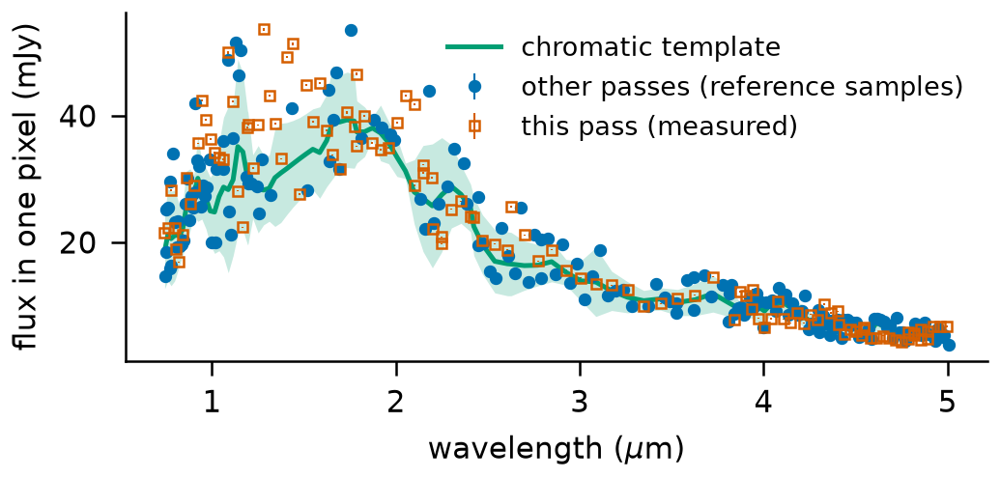
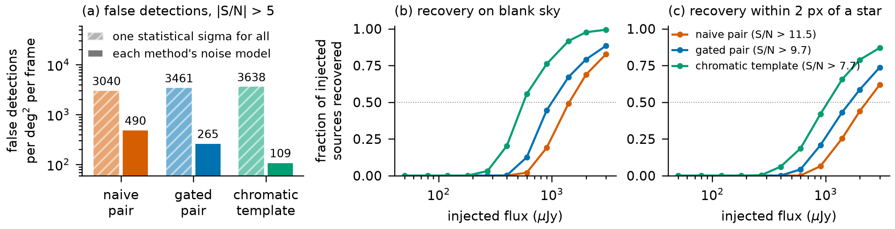
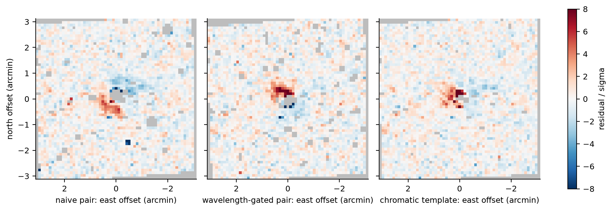
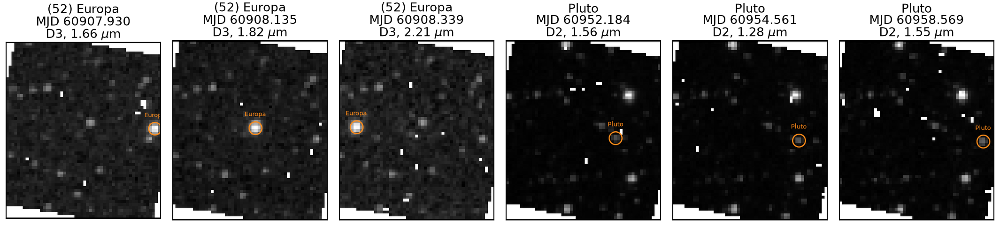
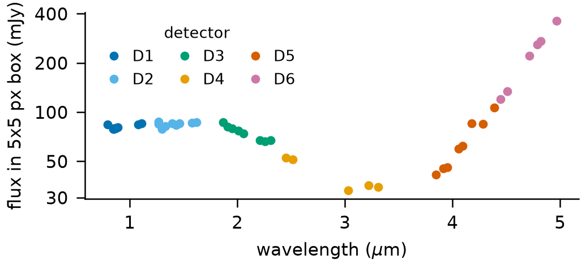

Abstract—SPHEREx maps the whole sky every six months in 102 near-infrared channels, but it never images a sky position twice at the same wavelength: each exposure passes through a linear variable filter, so every pixel has its own wavelength, and the 6.15 arcsec pixels under-sample the image. Blinking or subtracting two dates therefore makes static stars look like changes. We present ParallaX, an open web tool and pipeline that shows how any SPHEREx field changes with time. Its core is a chromatic template: for each frame we predict the static sky at that frame's per-pixel wavelength, by local-linear regression over the spectrum each pixel showed in the other survey passes, and subtract it under an empirically calibrated noise model. On five fields of real Level-2 data (1,991 images) the template is 3 to 15% deeper than a wavelength-gated pair difference and, at a matched false-detection rate of 0.5 per frame, recovers injected moving sources 1.2 to 1.9 times fainter on blank sky. Its low raw false-detection count rests on a measured model-error map and is not a like-for-like comparison. It rescues few frames, and pair differences show one-to-two-pixel stellar motion better. We recover the proper motions of Barnard's Star and Epsilon Indi B within one sigma and, without an ephemeris, the track of asteroid (52) Europa. A distant planet is the motivation of this work, not a claim.
Index Terms—astronomical image processing, citizen science, difference imaging, infrared surveys, local regression, moving-object detection, spectrophotometry, time-domain astronomy.
Pluto, the original “Planet X”, was found by comparing two photographs of the same sky taken on different dates and noticing one point of light that had shifted [1]. In the Backyard Worlds project, volunteers inspect animations built from time-resolved coadds of WISE images and have found brown dwarfs below the single-exposure limit [2]; the WiseView viewer [3] serves the same time-resolved unWISE coadds [4] to anyone with a browser.
SPHEREx [5], launched in March 2025, surveys the entire sky twice a year at 0.75–5.0 μm in 102 spectral channels. The NASA Space Apps Challenge 2026 asked for a public web tool that displays SPHEREx images of any patch of sky “like a little video”, so that anyone can spot objects that move or vary [1].
The difficulty is in the instrument. Each detector sits behind a linear variable filter (LVF), so the wavelength changes continuously across the image and every pixel of every exposure has its own wavelength [5], [6]. A revisit lands on another part of the filter, so two dates differ in colour as well as in time, and a naive blink turns every star with a sloped spectrum into a false alarm. The pixels are also coarse (6.15 arcsec) [7] and under-sample the point-spread function, so the pixel values of a star change with the sub-pixel pointing even at a fixed wavelength.
ParallaX contributes:
SPHEREx observes with six 2040×2040-pixel detector arrays (bands D1–D6) that together cover 0.75–5.0 μm; a dichroic lets one pointing expose two arrays at once (D1/D4, D2/D5, D3/D6), each seeing about 3.5°×11.3° [5], [7]. There are 17 channels per band, and the pixel scale is 6.15 arcsec [7]. From a Sun-synchronous low Earth orbit the telescope looks about 90° from the Sun along a great circle that rotates once a year, so the whole sky is covered twice a year, with deep fields near the ecliptic poles [5]. In the archive, a mid-latitude position is exposed in bursts of up to four frames about 2.2 min apart, each one channel further in wavelength; in our fields a position collects 60 to 150 frames per survey pass over two to eight weeks, and passes repeat about every six months.
Difference imaging matches a reference image to a new image and subtracts it, classically by fitting a convolution kernel [8] or by the statistically optimal ZOGY subtraction [9]. Both assume that the two images share a bandpass and that the PSF is sampled well enough to be matched. Neither holds for SPHEREx single exposures. Most viewers we surveyed instead avoid the colour problem by gating: two frames are compared only if their wavelengths agree within a tolerance. Gating is robust, but its noise is that of a single partner frame and it does nothing about pixel sampling. It is our baseline.
Surveys link detections across exposures [10] or shift and stack along trial tracks [11]; for slow, faint objects the human blink of time-resolved coadds remains effective [2], [4].
The clustering of distant Kuiper-belt orbits led to the Planet Nine hypothesis [12], with an estimated mass of about six Earth masses and a semimajor axis of about 380 au [13]. Its predicted brightness is low: a fiducial model at 622 au has V ≈ 21.6 [14]. Searches of WISE data found no distant companion [15] and exclude W1 < 16.7 over three quarters of the sky at high Galactic latitude (90% completeness) [16]; a far-infrared search reports one candidate needing follow-up [17]. The SPHEREx 5σ depth after four all-sky maps is 19.5–19.9 AB mag at 0.75–3.8 μm and 17.8–18.8 at 3.8–5.0 μm [5]. In our assessment a detection of such a body in single SPHEREx frames is implausible; the question is our motivation.
We use the SPHEREx Level-2 spectral images of Data Release 1 [18] and Quick Release 3 [19], retrieved from the NASA/IPAC Infrared Science Archive (IRSA) on 13 November 2026. A Level-2 file is a 65 MB multi-extension FITS file of one detector exposure [6], [7]: the calibrated image (MJy/sr), flag, variance and zodiacal-light images, a table of PSFs, and a table of wavelength and bandwidth on a grid of control points.
Range-request cutouts. The archive serves byte ranges over HTTP, so our reader fetches only the header, the pixel rows of the four image extensions that cover the cutout, and the wavelength table: about 0.5 MB per image instead of 65 MB, with pixels identical to those of the IRSA cutout service.
Sky index. A browser cannot query the archive catalogue directly, so we ship a static index. Each image is a 28-byte record of its footprint, time and file, in small binary files by sky cell. All 1,628,230 public Level-2 images take 45.6 MB, and a position query reads about four cells. Against the live archive at six positions, the index missed no image.
Fields. Table I lists the five challenge fields. Two further fields contain known movers: (52) Europa (111 frames of detectors 3 and 6; the asteroid is in 24) and Pluto (46 frames of detector 2; Pluto is in 18).
| Field | Images | Passes | Size | Target core saturated |
|---|---|---|---|---|
| Barnard's Star | 357 | 3 | 6.25′ | in 99% of frames |
| Epsilon Indi B | 454 | 4 | 6.25′ | no |
| WISE 0855−0714 | 258 | 3 | 8.3′ | no |
| RW Aurigae | 332 | 3 | 6.25′ | in 39% of frames |
| R Draconis | 590a | cont.b | 6.25′ | in 97% of frames |
aOf 2,493 available. bDeep field with continuous coverage.
Every cutout is resampled bilinearly onto one north-up tangent-plane grid of 6.15 arcsec pixels centred on the field. The zodiacal model and a robust residual sky level are subtracted. For each output pixel we also evaluate the wavelength table at the corresponding detector position, so that frame t carries, for every pixel p, a flux It(p), a variance vt(p), a wavelength λt(p), a bandwidth bt(p) and the union of the flags of the contributing pixels. Frames are grouped into survey passes: a new pass starts after a gap of more than 30 days.
For a target frame t and a pixel p, the reference samples are the measurements (yi, vi, λi) of the same sky pixel in all frames i of the other survey passes (leave-own-pass-out), excluding flagged pixels. Anything that moved or varied between passes is absent from the prediction and survives the subtraction. With Δi = λi − λt(p), each sample receives a Gaussian kernel weight tied to the local bandwidth,
and zero otherwise, where s is a scale factor. The template is the intercept of a weighted local-linear fit in wavelength,
with wi = Ki/vi. The fit is a linear smoother, Tt(p) = ∑i ℓiyi, with
from which follow the statistical variance of the template and the effective number of references,
Where the samples do not span a line (S0S2 − S12 ≤ 10−4S0S2) the fit falls back to the weighted mean.
Adaptive kernel. The fit starts with a narrow kernel, s = 0.5, and is repeated with s = 1, 2 and 4 only for pixels where neff is still below the target of 4; a wider fit replaces the previous one only if it raises neff. Pixels that end with neff < 2 receive no prediction. With two or three other passes, neff is about 6 per pixel (Fig. 1).
Robust rejection. Before the fits, one pass with a wide kernel (s = 2) removes outlying samples, so that a cosmic ray or a mover sitting in a reference frame cannot drag the fit. A sample is dropped if its leave-one-out residual ri/max(1 − ℓi, 0.3) exceeds 3.5 (vi + d 2)1/2, where ri is the residual from the fit and d is 1.4826 times the median absolute residual.
Empirical model error. Statistical variance does not describe how well other visits predict an under-sampled star. We measure the kernel-weighted scatter sw2 of the reference samples about the fit and compare it with their mean variance v̄. The scatter is measured within each reference pass, after removing the mean residual of that pass: a source that really changed between two reference passes then does not inflate the error and hide itself, while pixel-phase noise, which is random from frame to frame, is measured in full. With ν the effective degrees of freedom (kernel-effective sample number minus two fitted parameters and one level per extra pass), the model error is kept only where the excess is significant (otherwise it is biased high on empty sky):

Calibrated signal-to-noise. The residual of frame t is Dt = It − Tt − ot, where ot is the median of the raw difference over faint pixels (|Tt| below three statistical sigma). Its variance is
and the detection statistic is Dt/σt. Here αt is a per-frame scale (limited to 0.5–5) that gives the faint-sky residuals unit robust variance. Ct is the local contrast of the subtracted image, the maximum minus the minimum of each 3×3 neighbourhood, which measures how much a sub-pixel shift can change a pixel. The “star-noise” amplitude gd is fitted for each detector d as the robust width of Dt/Ct over pixels whose contrast exceeds ten statistical sigma, leaving out the surroundings of the known target. The model-error term counts the scatter of the target sample and of the fit. The fitted gd is roughly 0.06–0.14 in four fields: a bright star's pixel is uncertain by about a tenth of its local contrast.
Naive pair: a frame minus the frame of the same detector, from another pass, that is nearest in time. Wavelength-gated pair: a frame minus the other-pass frame (any detector) whose wavelength at the field centre is closest, accepted only if the two differ by less than 0.5 bandwidth; otherwise the frame has no result. Both receive the offset, the noise scale and the fitted star-noise term (with Ct from the partner frame) but no model-error map, which only the template has. Raw false-detection counts are therefore not like for like; we also report them with one purely statistical sigma for all three methods.
A detection is a connected group of pixels of one sign above 2.5 in signal-to-noise whose peak reaches 5 and that has at least two pixels. Each detection is classified, with its evidence recorded, as a motion dipole (opposite lobes on a static source), variable (same sign through the frames of a pass), mover (positive, point-like, no static counterpart), chromatic or star residual, or artifact.
The survey pattern provides a free veto: a position is normally exposed again about two minutes later, and nothing in the sky moves a pixel in that time. A mover candidate whose signal-to-noise in the next same-detector exposure of the visit (within six minutes) is less than half its own is reclassified as a cosmic ray or detector transient. In the first 202 frames of the Barnard field this removed 14 of 17 single-frame mover candidates.
Achromatic Gaussian point sources, with the header PSF width broadened by the pixel and by the resampling, are added to the target frames only, at eleven fluxes from 50 to 3000 μJy. Because every method subtracts data from other passes, an injection changes the residual by the injected image and leaves σt unchanged (a full re-run on 80 frames gives a peak S/N 0.98 of this shortcut's and completeness within 0 to 4 points). Each frame receives up to two sources on blank sky (nothing above 3σ within two pixels) and two next to a star (within two pixels of a pixel above 10σ), at a new random position in every frame. A source counts as recovered if a positive detection lies within 1.5 pixels and there was no detection within 2.5 pixels before the injection; frames without a result count as misses.
A common threshold would reward the most optimistic noise model. We therefore find, for each method, the threshold at which the real frames give the same false-detection rate, 0.5 per usable frame, and quote the flux f50 at which half of the injected sources are recovered at that threshold. False detections are counted outside 14 pixels of the known changing target.
Positions are measured on clipped mean stacks, one per survey pass and detector. The centre fit assumes only a round profile of free shape (a sum of concentric Gaussians solved linearly, on a tilted plane), so it also works on the wings of a star whose core is saturated. The scatter between the detectors' independent positions sets the error. Each pass is registered with the median shift of field stars, and proper motion is fitted with the parallax fixed or free.
A raw light curve mixes colour with variability, so we form matched-wavelength ratio spectra: each flux is divided by the reference pass's spectrum interpolated to the same wavelength. Fluxes come from aperture photometry (radius 2.5 pixels) or, for saturated stars, from a ring on the wings (10–13 pixels), which gives relative brightness only. For a target too faint for single frames we fit one moving point source to the pass-minus-mean images of all passes, in which static sources cancel.
Overlays use Gaia DR3 [20] and CatWISE2020 [21]. Known solar-system objects are found with SkyBoT [22] and refined with JPL Horizons [23], with SPHEREx itself as the observing site. The pipeline is built on Astropy [24].
Table II gives the ledger for the five fields, and Figs. 2 and 3 show the Barnard's Star field. The chromatic template is 3 to 15% deeper than the gated pair in every field in quoted sigma, and 17 to 25% deeper in the measured scatter of blank-sky residuals. At the matched false-detection rate of 0.5 per frame it recovers moving sources 1.2 to 1.9 times fainter on blank sky (563 against 1003 μJy in the Barnard field) and 1.1 to 1.6 times fainter next to a star. For rates of 0.2 to 1 per frame the blank-sky factor is 1.1 to 2.0 and the ranking never flips; next to a star the advantage vanishes at 0.2. A stronger simple baseline, the inverse-variance mean of all frames inside the gate, reaches 733, 821 and 894 μJy in the Barnard, RW Aurigae and WISE 0855 fields against 563, 593 and 707 for the template.
Raw false-detection counts are not like for like. With one purely statistical sigma for all three methods the template floods as much as the pairs: its subtraction of an under-sampled star is no cleaner than a pair's, and its low count in the main column comes from its measured model-error map. At |S/N| > 5 it gives fewer false detections than the gated pair in the Barnard and RW Aurigae fields under every calibration we tried (1.89 against 2.40 per frame in the Barnard field with the pairs' calibration); in the Epsilon Indi and WISE 0855 fields the sign depends on the noise model, and in R Draconis it has slightly more. The tail is not Gaussian: artefacts of saturated stars and unflagged transients dominate it, so the matched-rate thresholds are 8 to 12 sigma.

| Field | Method | Usable frames (%) | Depth (μJy) | False detections per frame | Same, one statistical sigma for all | f50, blank sky (μJy) | f50, next to a star (μJy) |
|---|---|---|---|---|---|---|---|
| Barnard's Star | naive pair | 93.6 | 38.9 | 4.44 | 27.55 | 1427 | 2297 |
| gated pair | 96.4 | 33.8 | 2.40 | 31.38 | 1003 | 1641 | |
| chromatic template | 100 | 30.5 | 0.99 | 32.98 | 563 | 1047 | |
| Epsilon Indi B | naive pair | 100 | 28.4 | 2.51 | 7.56 | 955 | 1524 |
| gated pair | 99.3 | 25.3 | 2.34 | 7.88 | 808 | 1176 | |
| chromatic template | 100 | 24.5 | 2.09 | 8.39 | 571 | 1094 | |
| RW Aurigae | naive pair | 100 | 30.4 | 3.28 | 24.84 | 1014 | 1349 |
| gated pair | 99.4 | 30.2 | 2.54 | 23.66 | 1150 | 1568 | |
| chromatic template | 100 | 25.8 | 1.28 | 24.23 | 593 | 982 | |
| WISE 0855−0714 | naive pair | 100 | 27.5 | 3.54 | 18.98 | 2193 | not reached |
| gated pair | 98.8 | 19.1 | 2.21 | 19.74 | 859 | 1326 | |
| chromatic template | 99.6 | 18.0 | 1.64 | 21.12 | 707 | 1157 | |
| R Draconis | naive pair | 100 | 147.4 | 0.49 | 3.27 | 1793 | not reached |
| gated pair | 79.0 | 106.8 | 0.58 | 3.30 | 1743 | not reached | |
| chromatic template | 97.1 | 103.1 | 0.61 | 3.24 | 1136 | not reached |
Depth: median one-sigma noise of the difference per pixel. False detections: residual sources with |S/N| > 5 and at least two pixels, outside 14 pixels of the target, per usable frame, with each method's own noise model; the next column gives all three one purely statistical sigma (no star-noise term, no model-error map). The two columns are not like for like between methods; f50 is. f50: flux at which half of the injected moving point sources are recovered, at the threshold that gives each method 0.5 false detections per frame; “not reached” means below 50% at 3000 μJy.

| Target | Measured with ParallaX | Reference |
|---|---|---|
| Barnard's Star | 10.2 ± 0.5 arcsec/yr (scatter between detectors) at 356.3° ± 1.5° (1.65 pixels over 3 passes, from the wings of a saturated star; free annual term, one degree of freedom) | 10.36 arcsec/yr at 355.6° (Gaia DR3) |
| Epsilon Indi B | 4.64 ± 0.09 arcsec/yr at 122.6° ± 1.3° (shift of 1.02 pixels over 4 passes) | 4.70 arcsec/yr at 122.7° |
| WISE 0855−0714 | moving source with a combined statistic of 6.6 (not a Gaussian sigma; see text) in pass-difference stacks of detectors 5 and 6 along the catalogue track (395 ± 69 μJy); 7.81 ± 1.57 arcsec/yr at 278.2° ± 4.3°, catalogue parallax assumed (centroid fit: 6.2 ± 1.1); absent in detectors 1–4 | 8.15 arcsec/yr at 274.8° |
| RW Aurigae | September 2025 relative to September 2026: 0.37 ± 0.14 mag fainter at 0.75–1.1 μm and 0.76 ± 0.03 mag brighter at 4.4–5.0 μm | irregular T Tauri variable |
| R Draconis | periodic change in 22 of 43 wavelength bins (fitted at the catalogue period), median peak-to-peak 1.18 mag; free period 250 d (244–258 d, 95%, bootstrap) | Mira variable, catalogued period about 246 d |
In Table III, the two fast stars shift by only 1.65 and 1.02 pixels over the baseline, yet their proper motions are recovered within one sigma. Sub-pixel centres scatter between detectors by 0.04 pixel (0.24 arcsec) for the unsaturated Epsilon Indi B and by 0.11 pixel on the wings of the saturated Barnard's Star.
WISE 0855−0714, the coldest known brown dwarf [25], is invisible in single frames in every method. A moving source appears only in stacks of detectors 5 and 6 along the catalogue track, 1.5 arcsec from the predicted position. Its combined statistic of 6.6 is not a Gaussian sigma, because the pass differences are not independent. On random tracks in the same maps it scatters by 0.6; 1 of 2,000 fixed-position tracks reaches 6.46 and 0 of 200 searched tracks reach 6.63. The reversed track gives −4.1 and detectors 1–4 give 0.2. A static neighbour of 277 μJy lies inside the same beam at shorter wavelengths. The challenge coordinates are the 2010 WISE position; the source is now about 2 arcmin further west, where we find it.
RW Aurigae changed in opposite directions at the two ends of the spectrum, while a control star shows no change (0.00 ± 0.02 mag). R Draconis and Barnard's Star saturate SPHEREx, so their fluxes come from the wings and are relative. For R Draconis no wavelength bin covers the 2.1 cycles of the whole data set (each spans 1.2 to 1.8), hence the wide bootstrap range.
We built two fields around known moving objects (Fig. 4). The main-belt asteroid (52) Europa (V ≈ 12.2) crosses its field in three visits on 20–21 August 2025. It is detected in all 24 frames that contain it (S/N 111 to 236), and its flux-weighted centroid differs from the Horizons prediction for an observer at SPHEREx by −0.05 ± 0.04 and 0.00 ± 0.07 pixel (about 0.3 arcsec). Without the ephemeris the classifier calls 21 of the 24 detections a mover and the linker recovers the track blind: 28.3 arcsec/h at position angle 89.2°, against 28.5 at 89.1°. Pluto (V ≈ 14.5) drifts 12 pixels in 6.4 days and is detected in all 18 frames (S/N 14 to 57 in the chromatic difference, 83 to 176 in the direct image), within +0.03 ± 0.10 and +0.01 ± 0.04 pixel of the prediction. At 0.7 arcsec/h it is below the linker's minimum of 1 arcsec/h: the classifier alone calls 8 detections a mover and 8 a variable, and only the ephemeris names it.
Sixty cutouts that follow Europa through all six detectors (5 August to 1 September 2025) give a single-exposure spectrum (Fig. 5): 45 clean points from 0.79 to 4.97 μm. These are box sums, uncorrected for aperture and for the change in distance, phase and rotation over the 26 days. On Europa, 757 of 1500 box pixels carry the archive's OUTLIER flag: masking such pixels in the searched image would erase the asteroid, so we exclude them from the template references only.


For other coordinates the static site looks up the index and reads the pixels from the public archive in the browser, with no server: 55 images of M51 appear in 10 to 12 s on a fast connection (one to two minutes on a slow one). Live fields offer the blink, stacks, spectra and pair differences; the template and ledger need the Python engine (two to four minutes per field).
Gating costs few frames. Between 96 and 99% of frames find a partner within half a bandwidth (79% in the R Draconis deep field), because the survey revisits at nearly repeating wavelengths. The advantage of the template is depth and sensitivity at a matched false-detection rate, not rescued frames.
Pixel sampling, not colour, is the largest noise term. The peak pixel of a bright star scatters by 23 to 27% from frame to frame at fixed wavelength. This is why all three differences flood with false detections under a statistical noise model. Registration is good within a pass (0.16 arcsec rms on 25 stars), but pass-to-pass offsets of up to 0.1 pixel are not corrected in the differencing.
Independent review. An independent adversarial review re-ran the code; the numbers here are the corrected ones. It showed that an earlier “statistical noise” column gave the template its model-error map, and that without the ephemeris the classifier called only 2 of Europa's 24 detections a mover (so bright a source exceeded a fixed size limit). Both are fixed.
For a star that moves one or two pixels, a pair shows the dipole better. Both lobes exceed 5σ in 69% of Barnard frames for the gated pair against 17% for the template: a template built from two other passes averages two old positions and dilutes the negative lobe. For such stars the tool defaults to blinking per-pass stacks. In the ledger's known-target test the template fails for Barnard's Star, whose detection next to the saturated core is classed an artifact in 85% of frames, and RW Aurigae's change exceeds 5σ in 39% of template frames against 86% for the gated pair.
R Draconis is not a clean test. The saturated Mira fills the cutout; depth is three to four times worse and the template has slightly more false detections than the gated pair (0.61 against 0.58 per frame). Injected sources are achromatic Gaussians; the 14-pixel exclusion radius and the matched rate of 0.5 per frame are our choices.
Parallax is not measured reliably. With a free annual term, the fit for Barnard's Star returns about three times its true parallax. Field stars shift between passes by 0.03 to 0.07 pixel, alternating in sign along the parallax direction; uncorrected, this imitated a parallax 2.7 times too large, and a residual of unknown cause remains. Consecutive passes sit at opposite extremes of the parallax ellipse, so any Sun-synchronous systematic is degenerate with parallax.
What the tool can say about a distant planet. By our own calculation (not a published result), a body at 300 to 700 au would shift by 23 to 10 arcmin (224 to 96 pixels) between consecutive passes and by two pixels or less within one visit. The search is thus a pass-to-pass comparison, which the per-pass stacks support; sensitivity is the obstacle (Section II-D). We report no candidate.
Predicting each frame from the spectrum that every pixel showed in the other passes, with a noise model measured from the data, gives difference images that are deeper, and more sensitive at a matched false-detection rate, than wavelength-gated pairs, and the same data yield proper motions, chromatic variability and asteroid positions that agree with catalogues and ephemerides. The gain has measured limits, which we publish with it.
We measure pixel-phase noise but do not model it. Next steps are a template that regresses on sub-pixel phase as well as wavelength with the archive PSFs, co-moving fields with shift-and-stack, and a parallax-aware search between passes.
The code (Apache-2.0) is public at https://github.com/abed-r-j/parallax-spherex and the web tool at https://abed-r-j.github.io/parallax-spherex/. Every number in Sections V and VI is regenerated by two scripts in the repository.
This publication makes use of data products from the Spectro-Photometer for the History of the Universe, Epoch of Reionization and Ices Explorer (SPHEREx), which is a joint project of the Jet Propulsion Laboratory and the California Institute of Technology, and is funded by the National Aeronautics and Space Administration. This research has made use of the NASA/IPAC Infrared Science Archive, which is funded by the National Aeronautics and Space Administration and operated by the California Institute of Technology. The data are SPHEREx DR1 (doi:10.26131/IRSA678) and QR3 (doi:10.26131/IRSA662). We also used data from the ESA mission Gaia (DR3), the CatWISE2020 catalogue served by IRSA, the IMCCE SkyBoT service, and the Horizons system of JPL Solar System Dynamics. This work is not affiliated with or endorsed by NASA.
Use of SI tools. The team chose the challenge, the goal and the direction: a comparison of SPHEREx dates that accounts for the changing wavelength. The specific method was worked out with an SI assistant (Claude, by Anthropic), which also surveyed existing tools, wrote the code and drafted this document under the team's direction. The team reviewed the work, ran it and is responsible for it. All results are computed by the project's own code from real SPHEREx data; no SI-generated images, video, voices or faces are used. Development began on 12 November 2026, before the on-site event of 14–15 November; the local organizers allowed this.